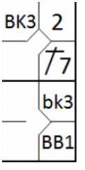
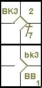

Un BALK est une action irrégulière commise par le lanceur lorsqu’un ou plusieurs coureurs sont sur les bases, donnant le droit à tous les coureurs d’avancer d’une base.> [Définition des termes de l'OBR].
Exemple 44: L'abréviation utilisée pour une avance sur un balk est « BK » suivie du numéro de frappe du joueur au bâton au moment du balk. S'il y a plus d'un coureur sur les bases, « BK » (majuscule) est utilisé pour le coureur de tête et « bk » (minuscule) pour les suivants.
| WBSC | Transcription dans l'outil de scorage | Outil |
|---|---|---|
|
 |
/* Le premier batteur frappe un hit dans le champ gauche */ action { batter -> 1B7 } /* Le batteur suivant gagne la première base sur un 'base on ball', le coureur avance */ action { batter -> BB , runner1 -> + } /* Le lanceur fait un balk, les deux coureurs avancent */ action { runner1 -> bk , runner2 -> BK } |
 |